Use the provided check boxes to mark off your progress as you go.
Use the provided check boxes to mark off your progress as you go.
Use the provided check boxes to mark off your progress as you go.
Locate the carbon cap strips for the mid panels that you cut when you built the tip panels. Cut .014 inch mylar strips the exact same size as the mid panel lower cap strips.
Lightly mist the mylars with spray adhesive and smooth them over your wax covered plans.
Wax the strips to prevent sticking and let dry.
VERY lightly mist the bottom spar cap and smooth it over the Mylar strip, taking care to place the end precisely at the dihedral break.
The purpose of these light mist coats is to prevent the Mylar strip and lower cap strip from sliding around while you work.
Locate your joiner rod assemblies.
Lightly sand the bottom glass reinforced surfaces to promote good adhesion to the cap strips.
Wrap the joiner rods with masking tape so that you won't inadvertently spoil them with epoxy.
Using epoxy thickened with cabosil, butter the lower surface of the joiner rod assemblies and install them in the correct position at the end of the mid panel lower cap strip.
Wipe away excess splooge, particularly at the end of the joiner assembly where the first rib will later go.
Weigh the joiners down and let the epoxy cure before proceeding.
This step will ensure that the joiners do not squirm out of position as you continue the spar building.
Note: if you omitted the pre-bonding of the glass reinforcement when you built your joiner rod assemblies, then use unthickened epoxy and layup the glass layers onto the end of the cap strip, followed by the joiner rod assembly. Weigh down the joiners down and let the epoxy cure before proceeding. See AllegroLite_Joiner_Building for details on the glass layers.
| 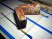 | Gluing in the Joiner Rod Assemblies |
|---|
Create a pair of jig blocks to hold up the tip panels during the mid panel build. The blocks should have an 11 degree face on top and the tallest dimension should be 1.8 inches.
Carefully remove the spar webs and ribs for the mid panels from the laser cut blanks; use a sharp x-acto to cut through the flash.
Remove the flash on each piece by lightly sanding them flush to the contour.
The fifth ribs in your rib set will be cut in half and installed at the dihedral break after the spar is wrapped; set them aside for now.
The sixth through tenth ribs are used in the mid panel construction.
Note there is a right and left hand blank in the kit.
Note also the 1/4 inch thick end ribs for the joiner break will also be cut into two pieces and installed after the mid panel spar is wrapped; set them aside for now.
The required webs are numbered 6 to 10.
Note there are four webs of each number.
They are cut from 3/16 inch material and need to be paired
up to form 3/8 inch wide webs for the mid panels.
Use medium CA to gang them up before trimming the ends to the correct sweep.
Use a jig to sand the ends of the webs so that they have the correct sweep angle to match the plans. Do a dry fit as you go to make sure the pieces conform to the plan.
Prepare two end-grain basswood inserts (one each for left and right mid panels) to replace the 3/8 inch portion of the spar web that is closest to the break (web number 10) - use a piece of the 1/4 x 3/4 x 18 inch basswood stick.
The face of the insert at the tip panel break should be beveled to 6 degrees and butt up against the basswood insert that is already bonded into the tip panel.
Shorten the web by the same length as your insert.
The webs are tapered, so shorten the correct end!
| 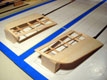 | Tip-Panel Jig Blocks | 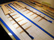 | Mid-Panel Dry Fit |
|---|
Mix up enough epoxy to do the two mid panels at once. Add cabosil to your mixed epoxy until it has the consistency of Vaseline. See Mark's Construction Tips #1 for more details on the spar building process. See Mark's Wing Building Sequence for a summary and figures for the complete building process.
Butter the bottom spar cap.
Start at the end of the spar with the preglued joiner rod assembly.
Butter the end face of the joiner rod assembly and place the correct rib against it.
Press parts into the buttered cap lightly to squeeze out most of the excess and hold the part in position.
Next, butter both ends of the appropriate end-grain balsa web and butt up against the rib you just placed.
Place a rib, then a both-ends-buttered web, then a rib, etc.
When you get to dihedral break end of the spar, before you place the last web, block up the tip panel in place with its carry through segment on top of the bottom spar cap, in the correct position.
Butter the insides of the carry through segments and the face of the basswood insert that is already built into the tip panel. Use a bit of extra epoxy to ensure there are no voids as you work on this congested region.
Insert the basswood insert you made in step 2 in between the carry through segments and push it up tight against tip panel insert.
Finally butter both ends of the shortened web segment and insert between the last rib and the basswood insert.
Once all the webs and ribs are placed, butter the top spar cap strip and place it on top of your assembled spar.
Gently squeeze the cap down into position.
Take this opportunity to use a scrap of balsa to wipe the splooge from all corners where the webs and ribs meet.
Don't bother with the splooge that comes from the spar caps, you will trim this off in the morning.
Place two strips of masking tape perpendicular to the spar axis, spaced along the spar length, to create little tents over the spar, sticking the ends to your wax paper. The goal is to prevent the spar cap from shifting when you weigh it all down.
Place a strip of 1/8 inch thick waxed polyethylene foam over the spar cap.
Once both right and left mid panels have reached this stage, place a rigid plate on top of the two parallel spars and weigh it down.
A piece of plate glass will do for the plate.
A continuous layer of bricks down the length of the spars ought to do for weight.
Make sure that the plate stops precisely at the dihedral break end of the upper spar caps.
And make sure that the other end of the plate is not being held up by the joiner rods which stick up above the height of the top cap strip.
Notes: In the photo below, you may notice some mylar strips at the dihedral break which are perpendicular to the spar axis. Please ignore them - I put them there to ensure the height of the cap strips would be correct using the integrated carry through method (discussed in the Tip Panel Building sequence), but as it turns out this was not necessary and created more problems than it solved.
Also, you may find that the tip panel doesn't naturally form the correct angle of attack (no washout or washin relative to the mid panel). The TE of the tip panels should be flat against the building surface. I found I had to shim the LE of the tip panels to accomplish this. Similarly, not all the TEs of my mid panel ribs wanted to stay flat against the building surface. I lightly shimmed them to ensure there wasn't built in twist or (worse) waves along the span of my mid panels.
Finally, I found that the polyethylene foam did not provide enough pressure against the top spar cap right at the dihedral break. I inserted a strip of balsa there so that enough pressure was applied to properly consolidate the spar caps and basswood inserts at the break. Although two bricks were used here, don't be shy about piling on a lot more weight to ensure a good bond. The endgrain webs can support thousands of pounds, so there's no danger of crushing anything.
| 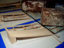 | Curing the Mid-Panels |
|---|
Go to bed. You will want to revisit your panels when the epoxy has reached a leathery stage. This will depend primarily on your epoxy and the ambient temperature. For a long working epoxy (90+ minutes pot life), at reasonable room temperatures, this will probably be about six to eight hours. Your mileage may vary, especially at higher ambient temperatures. Until you have a feel for it, check your epoxy every hour or so.
When the epoxy has reached a leathery (green) consistency, unveil your handy work, and trim the excess splooge from around the spar caps with a sharp X-acto blade.
Try not to nick the ribs.
This will not work if you forgot about it and waited too long - in this case, you’ll have to carefully sand the splooge away.
Round the edges of the spar caps between the ribs using some sandpaper glued to a block 1 to 1-1/2 inches wide.
The goal is to form a small radius so that the wraps of Kevlar tow will not be cut by a sharp corner.
Over the end bay where the joiner rod box is located,
aggressively round off the sparcaps and ply webs
and thin out the sparcaps as you approach the end.
The sparcaps ideally want to taper over the joiner bond,
from their normal cross section at the next-to-end rib,
down to zero at the end rib itself (don't go to this extreme,
though). The taper evens out the shear stresses and actually
gives a stronger spar/rod and spar/tube connection. Thinning
the sparcap at the end rib also allows adding more Kevlar wraps
right at the end to prevent bursting. If the sparcaps are
not thinned, the thicker Kevlar can protrude out of the
airfoil contour on the bottom.
| 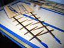 | Mid-Panel Cured and Cleaned |
|---|
Before wrapping the spar with kevlar tow, you need to install some fiberglass around the spar joiner rod assembly for torsional strength.
Use 2 oz fiberglass cloth on the bias (+/- 45 degrees).
Mist the glass very lightly with spray adhesive and wrap the joiner box with two layers.
Wrap the spar, dihedral break to joiner rod box with kevlar tow.
First transfer the tow to a 1 inch dowel a few feet long, being careful not to twist it.
Use a drop of CA to anchor the tow at one end of the spar.
Hold the dowel to the floor with your feet to control the tension while you use both hands to carefully wrap the spar, flattening out the tow to a 1/8 inch ribbon as you go.
Wrap the spar six turns per inch.
If your tow is coming out to be 1/8 inch wide ribbons, the space between the wraps will be about .04 inches (somewhat less than 1/16 inch).
Wrap two or three extra layers of kevlar tow at the joiner rod box end of the spar to prevent bursting.
Anchor the other end with another drop of CA and then cut it free.
See Mark's Construction Tips #1 for more details on spar wrapping.
| 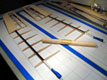 | Mid-Panel Ready to Wrap | 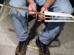 | Mid-Panel Wrapping |
|---|
Wet out the kevlar wraps and blot away excess epoxy.
The glass/Kevlar wrap over the joiner rod box is the most
difficult to wet out.
After mixing the epoxy, apply it at the joiner bay first, when its viscosity is the lowest.
Light heating of the spar at that bay before epoxy is applied greatly enhances wicking (this is recommended with medium-viscosity epoxies like West 105/206).
The Kevlar on the rest of the spar wets out very easily without heating.
Blotting off extra epoxy is much easier if a bit of heat is applied.
| 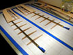 | Mid-Panels Wrapped, Wetted, Blotted |
|---|
Cut the upper and lower spar cap filler strips from the 1/32 x 2 x 36 inch stick.
Use a bit of the epoxy from the last step to coat the lower spar cap filler strip and place the spar assembly on top of it. Use some of the epoxy with microballoons and lightly coat the top of the spar to fill any ridges in the tow. Follow this with the top spar cap filler strip. Squeeze it gently down and wipe away any splooge.
Prepare both mid panels and weigh them down with a plate and bricks again.
When cured, sand the top and bottom filler strips flush with the ribs.
Bending a flexible piece of metal or plastic over the top of the ribs is a good way to gauge the progress of sanding the top filler strip.
Ideally it should be flush with the natural curve of the rib.
Create the TE strip. Start by gluing a 1/16 x 1/4 x 36 inch hard balsa stick to a 1/4 x 1.25 x 36 inch balsa aileron stock. Glue these two strips together thin edge to edge using Titebond or Ambroid.
Following the plan, cut the glued strip into two pieces, one for each mid panel. Trim away a portion of the thickest part of the aileron stock so you end up with a taper, about 1 inch wide at the joiner break and 11/16 inches wide at the dihedral break. Note: you need a right and left hand version. Bevel these composite TE strips so that the thicker part is close, but not all the way down to the height of the TE ribs.
Notch the TE strip. To form the notches, create a notching tool by gluing a 3/32 inch strip of sandpaper on to the edge of a piece of 6 x 1 x 3/32 inch hard balsa scrap. Sand the 1 inch face of this tool down until sanding with the 3/32 inch edge makes notches which form a friction fit with the rib material. Position the notches so that the ribs seat into the strip about 3/32 inch - you may need to trim off the TE ends of the ribs slightly.
Create and bevel the lower edge of the inner LE strip from 3/32 x 2 x 36 inch stick. See Mark's Construction Tips #2 for more details on the inner LE strip installation.
Bevel the LE tip of each rib to match the LE sweep.
Using Titebond, glue the TE strips to the TE of the ribs and the beveled inner LE strip to the LE of the ribs.
While gluing the TE strip on, use a blob in each TE strip notch and make sure the strip is flush with all the ribs on the bottom surface (pick up the panel and check it).
Make sure the lower edge of the inner LE strip is flush with the lower surface of the LE of the ribs.
Use bits of masking tape to hold in place while curing.
See Mark's Construction Tips #2 for more details on LE and TE strip installation.
Wipe away excess glue, but create a Titebond fillet at all strip/rib intersections.
When cured, sand the inner LE strip flush with the top of the ribs.
| 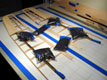 | Gluing TE Strip and Inner LE Strip |
|---|
Install the end ribs at the dihedral break.
These are the fifth ribs from the blanks.
Cut the ribs into two pieces, one piece for the LE up to the spar, and the other for the TE up to the spar.
Fit the two pieces so that they will stay in position with light friction.
Rough up the kevlar wrapping where the rib pieces butt up against it.
Using thickened slow epoxy, butter the ends of the pieces and the faces which will be installed adjacent to the rib already in place at the dihedral break.
Place the rib halves in place and gently squeeze out excess epoxy.
Remove any excess, but leave a small fillet inside the bays at the rib/spar and rib/strip intersections.
Install the end ribs at the joiner break.
These are the 1/4 inch thick ribs.
Cut the rib into two pieces, one piece for the LE up to the spar, and the other for the TE up to the spar.
Fit the forward piece so that it will stay in position with light friction.
Cut the rearward piece and the TE strip to form a miter joint according to the plans.
You will also need to form gusset pieces according to the plans.
I used two layers of the 1/4 rib blank scrap, CAed together.
The gussets must be thick enough so that they can be sanded flush with the top of the rib contour later.
Rough up the kevlar wrapping where the rib pieces butt up against it.
Using thickened slow epoxy, butter all the appropriate surfaces of the rib pieces, TE strip, and gussets.
Place all the pieces in place and gently squeeze out excess epoxy.
Remove any excess, but leave a small fillet inside the bays at the rib/spar and rib/strip intersections.
When cured, sand the joiner end rib gussets flush with the tops and bottoms of the ribs.
| 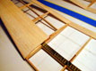 | Dihedral Break End Rib Installation | 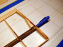 | Joiner Break End Rib Installation |
|---|
Cut out pieces of sheeting for the tops and bottoms of both mid panels.
Cut them oversize 1/16 - 1/8 inch and sand lightly with 220 grit sandpaper, and finish with 320 or 400 grit.
You want to get the sheeting smooth now to minimize sanding after installation.
Preform the sheeting if desired using Mark's instructions on Preforming D-Tube Sheeting.
Let the sheets dry fully in a warm place before performing the installation steps below, else you might get some shrinkage and built-in stresses.
The sheet interiors may still be damp even if the exterior is dry.
Here is my modified preforming technique:
| 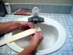 | Wetting Sheeting | 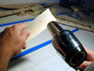 | Forming Sheeting |
|---|
Glue on the lower side sheeting first with Titebond thinned slightly with water to extend working time.
You will need to shim under the LE to ensure that the sheet is in full contact with the ribs.
The panel does not have to be absolutely flat when the bottom sheet is installed (since the D-tube isn't being closed yet), so an alternate approach is to invert the panel and block it up so that you can weigh down the lower sheeting with weights (see photo below).
Lightly weigh down the panel and LE strip to hold the sheet in position while it cures.
If you don't preform the sheeting, you may find it difficult to keep it in full contact with the ribs.
| 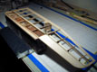 | Blocking Up Inverted Panel | 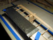 | Curing Lower Sheet |
|---|
Once the Titebond has setup so that the lower sheeting won’t move, strip and glue in the balsa fillets.
Cut the fillet strips from soft 3/16 inch balsa by holding the X-acto at roughly a 45 degree angle, followed by a normal 90 degree cut.
Cut them very slightly long so they are self-jamming between the ribs.
Squeeze a line of Duco or Ambroid along the corner and push the gusset in.
Wipe off glue which oozes out on the bottom between gaps in the sheeting and spar.
| 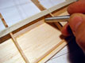 | Installing Balsa Fillets |
|---|
Glue the top sheet with thinned Titebond.
Weigh down the sheet with sand or shot bags to hold it in place.
This is where the D-tube is being closed and the panel twist is being set, so the panel must be weighted down perfectly flat to the building board while the glue sets.
When the top and bottom sheeting is cured, sand the D-tube sheeting flush with the inner LE strip.
Create and bevel the lower edge of the outer LE strip from the 3/32 x 2 x 36 inch stick.
Glue onto the LE with Titebond.
Make sure the lower edge is flush with the lower sheeting.
Use bits of masking tape to hold in place while curing.
Fit and install support strips between ribs, located between spar and TE.
These are also cut from the 3/32 x 2 x 36 inch stick.
Create two tapered strips that are 1/4 inches at one end and 9/32 inches at the other, each long enough to do one mid panel, about 16 inches.
See Mark's Construction Tips #2 for more details on rear support strip installation.
Use a nick and cut method to cut all the pieces for one panel with a light friction fit for each piece.
Glue in and with Titebond and leave slightly above the rib top surface.
Sight down the panel and adjust so that the support strips make a straight line, then push them down flush with the ribs using a straight edge.
Fillet support strip/rib intersections with Titebond.
Sand the upper edge of the outer LE strip flush with the sheeting. Also sand the sheeting ends and LE strips flush with the end rib face. Continue sanding the end rib faces to the required 6 degree bevel. Do not remove any material at the bottom surface - this should match the wing plan at this point. Use an angle jig to make sure you are keeping a consistent 6 degree bevel across the end rib face.
Prepare for glassing the end ribs by cutting enough 1.5 or 2 oz fiberglass for two layers top and bottom of each end rib on both mid panels. Use the wing plan to create yourself a template. I found using a rolling cutter and formica template most effective for cutting these strips.
Lightly mist the strips with spray adhesive and
apply two strips top and bottom and wet out with epoxy.
Blot away excess.
Carry the glass over the rear part of the end ribs, the spar, and the
sheeting as shown on the Wing Structure document.
This glass is crucial to prevent the joint from peeling apart under load.
| 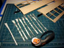 | Ready to Glass End Ribs | 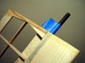 | End Ribs Glassed |
|---|
This completes the mid panel build sequence. Final shaping and covering is all that is required to finish the outer wing mid + tip panels.
| 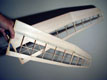 | Two Finished Mid+Tip Panels | 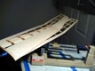 | Final Weight For Two: 125.5 grams |
|---|
| Revised 4/25/2002 James R. Osborn |
|---|
{kind=link}
{kind=link}
{kind=link}
{kind=link}
{kind=link}
{kind=link}
{kind=link}
{kind=link}
{kind=link}
{kind=link}
{kind=link}
{kind=link}
{kind=link}
{kind=link}
{kind=link}
{kind=link}
{kind=link}
{kind=link}
{kind=link}
{kind=link}